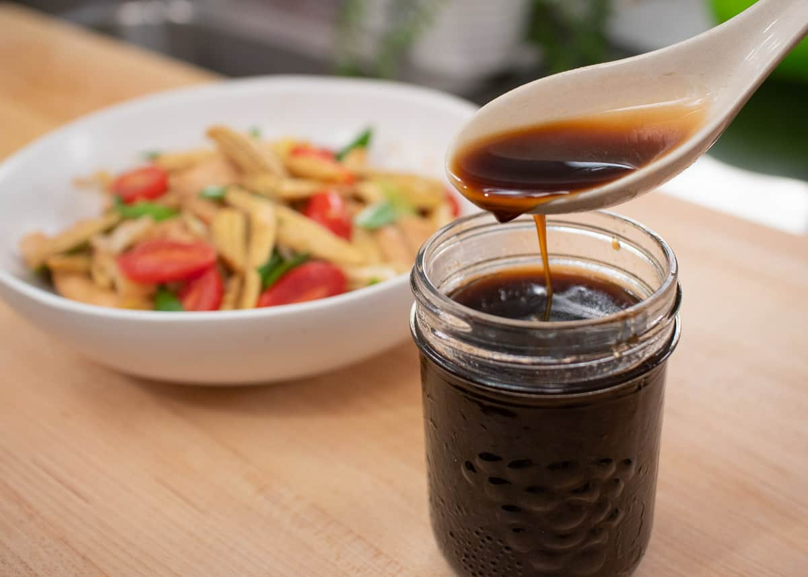

Stir Fry Sauce

Think of this sauce as a base that enhances the flavor of your stir fry
You can add sugar, hot sauce, curry paste, etc. to fit the flavor profile
of whatever you're adding it to. Remember not to add too much salt, as this
sauce serves as a salt addition for your dish
Ingredients
- .25 cup oyster sauce
- 2 tablspoons soy sauce
- 1 tablspoon fish sauce
- 1 tablspoon thai seasoning, i.e. Golden Mountain Sauce
Instructions
- Combine all ingredients together and store in a well-sealed container
- When using, use 1 tbsp of sauce per serving of stir fry, give or take
- You may want to add .25-.5 tsp of sugar per serving, depending on
the dish and the flavours you're going for